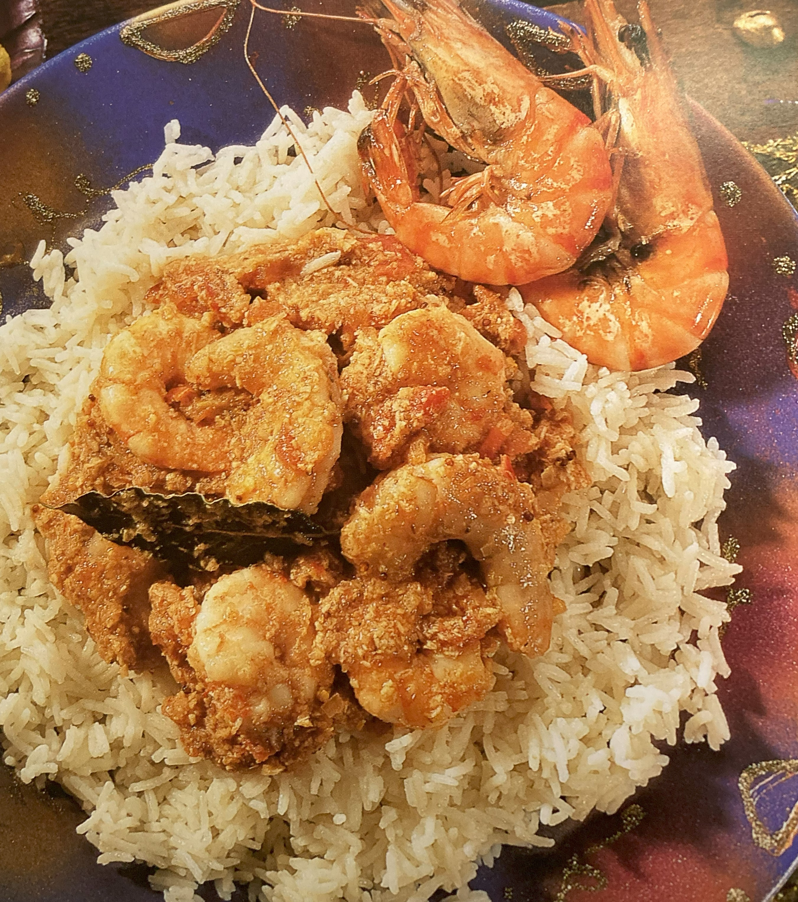

Prawn Curry

Ingredients
Switch to Steps
-
1 1/2 lb Raw Tiger Prawns
-
4 Dried Red Chillis
-
1 cup Dried Coconut, shredded
-
1 tsp Black Mustard Seeds
-
1 Large Oninon, chopped
-
3 Tbsp Vegetable Oil
-
4 Bay Leaves
-
1 in piece Fresh Ginger, chopped
-
2 Garlic Cloves, crushed
-
1 Tbsp Ground Coriander
-
1 tsp Chilli Powder
-
1 tsp Salt
-
4 Tomatoes, finely chopped
Steps
Switch to Ingredients
-
Peel the prawns. Run a sharp knife along the side of each prawn
to make a shallow cut and carefully remove the black intestinal vein.
(You might like to leave a few of the prawns unpeeled setting them
aside to use as a garnish for the finished dish).
-
Put the dried red chillis, coconut, mustard seeds and onion in a wok or large pan.
-
Fry over medium heat for 5-6 minutes, or until the mixture begins to brown.
Stir continuously to ensure even browning and to avoid burning the coconut.
-
Put into a food processor and process to a coarse paste.
-
Heat the vegetable oil in the pan and fry the bay leaves for 1 minute.
-
Add the chopped ginger and the garlic and fry for 2-3 minutes.
-
Add the ground coriander, chilli powder, salt and the paste and fry for about 5 minutes.
-
Stir in the tomatoes and about 3/4 cup water and simmer for 5-6 minutes, or until thickened.
-
Add the prawns and cook for 4-5 minutes, or until they turn pink.
-
Grill (broil) the reserved whole prawns, if using, until pink.
-
Serve the curry on a ring of plain boiled rice and garnish with the whole prawns, if using.